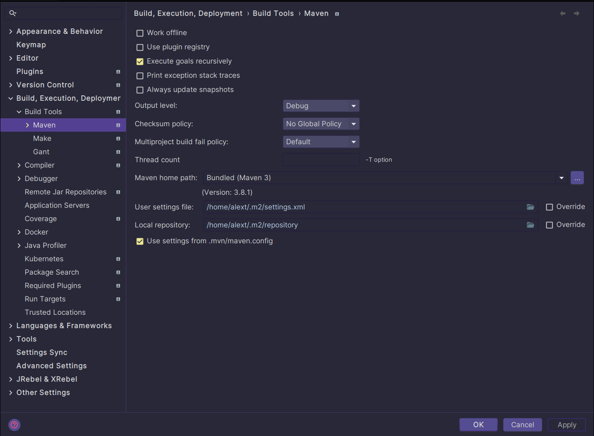
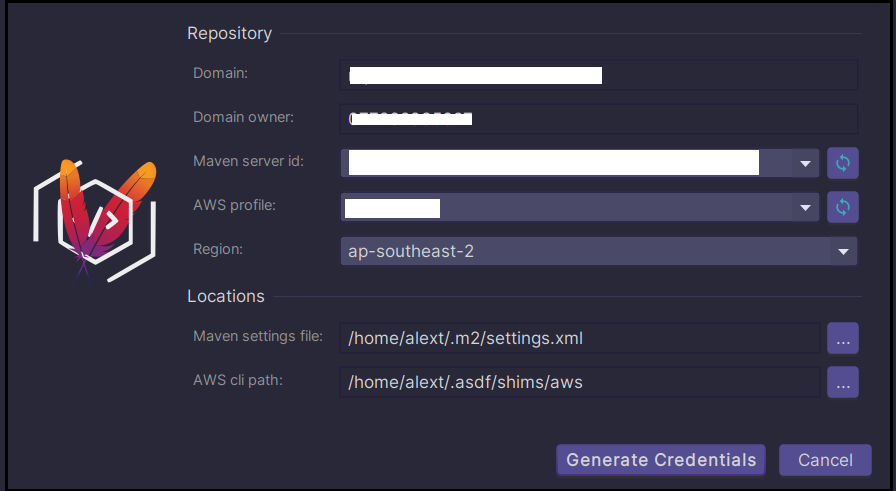

Bringing Maven and AWS CodeArtifact Together
As a part of migrating our infrastructure fo AWS, we use CodeArtifact for hosting and caching Maven dependencies as well as mirroring the external repositories. Setting up CodeArtifact repositories is not too difficult, but making it work with Maven in a local environemnt is very chalengging due to a lot of AWS security constrains. In this post, I would like to share some experience and ideas on harmonising Maven and CodeArtifact when setting up my working environment.
Let’s assume that AWS CLI v2 has been installed
$ aws --version
aws-cli/2.15.30 Python/3.11.8 Linux/6.5.0-26-generic exe/x86_64.ubuntu.23 prompt/off
and there is an AWS profile dev configured properly in ~/.aws/config. This is an example AWS profile using the new AWS SSO:
...
[profile dev]
sso_session = dev-sso
sso_account_id = 0123456789
sso_role_name = Developer
region = ap-southeast-2
output = json
[sso-session dev-sso]
sso_region = ap-southeast-2
sso_start_url = https://d-9876543210.awsapps.com/start
That is, if we test the account with aws sts get-caller-identity, it returns a good response
$ aws sts get-caller-identity --profile dev
{
"UserId": ".....",
"Account": "....",
"Arn": "arn:aws:sts::..."
}
Then we need Apache Maven version 3.6 or later.
$ mvn --version
Apache Maven 3.8.8 (4c87b05d9aedce574290d1acc98575ed5eb6cd39)
AWS CodeArtifact Repositories
Let’s also assume that, we set up a CodeArtifact repository with details can be found via AWS Web console, then a repository of the owner 0123456789 as summarized below:
- Region:
ap-southeast-2 - Owner:
0123456789 - Domain:
company-repositories
So the repository URL would be https://company-repositories-0123456789.d.codeartifact.ap-southeast-2.amazonaws.com/maven/dev/.
Apache Maven Settings
By default, Maven will look for a file settings.xml in its installation directory ${maven.home}/conf/ or the current’s user home directory ~/.m2. You can also explicitly specify a settings file using mvn -s path/to/settings.xml but that’s another story. It’s safe to assume we use the ~/.m2/settings.xml file with the content as below (the XML namespaces are removed for readability)
<settings>
<profiles>
<profile>
<id>default</id>
<repositories>
<repository>
<id>dev-repo</id>
<url>https://company-repositories-0123456789.d.codeartifact.ap-southeast-2.amazonaws.com/maven/dev/</url>
<layout>default</layout>
</repository>
</repositories>
</profile>
</profiles>
<!-- Authentication part -->
<servers>
<server>
<id>dev-repo</id>
<username>aws</username>
<password>${env.CODEARTIFACT_AUTH_TOKEN}</password>
</server>
</servers>
<activeProfiles>
<activeProfile>default</activeProfile>
</activeProfiles>
</settings>
These settings can also be taken from CodeArtifact instructions. Just open AWS Web console, go to CodeArtifact, choose the corresponding repository then “View connection instructions”. In the pop-up dialog, choose “Maven mvn” as package manager client, then copy Step 4, 5, and 6 (optional for mirroring) to the corresponding section of ~/.m2/settings.xml as above.
CodeArtifact Authentication
In order to fetch Maven resources from CodeArtifact, we must set up the <server> section, in which the <username>, by CodeArtifact convention, must be aws. The <password> element must contain a Base64 encoded authentication token generated by the following AWS CLI command:
aws codeartifact get-authorization-token \
--domain <repo_domain> \
--domain-owner <domain_owner_id> \
--region <region> \
--query authorizationToken \
--output text
Using shell script syntax, we can create an environment variable CODEARTIFACT_AUTH_TOKEN, assign it with the token, and expose it to be used by Maven. Please note that, we need to specify the AWS profile dev, too.
export CODEARTIFACT_AUTH_TOKEN=$(aws codeartifact --profile dev get-authorization-token \
--domain company-repositories \
--domain-owner 0123456789 \
--region ap-southeast-2 \
--query authorizationToken \
--output text)
After that, we can run any Maven commands and Maven will use the generated CODEARTIFACT_AUTH_TOKEN variable, respectively. Otherwise, you will see an error message with the code Unauthorized (401).
[WARNING] Could not transfer metadata ... from/to dev-repo (https://company-repositories-0123456789.d.codeartifact.ap-southeast-2.amazonaws.com/maven/dev/): status code: 401, reason phrase: Unauthorized (401)
Problems & Solutions
In summary, after completing the configuration, there are few steps to enable Maven access to CodeArtifact repository.
- AWS authentication: This step is required when using AWS SSO (recommended). In case you use the legacy credentials-based configuration, this step can be skipped.
$ aws sso login --sso-session dev-session
Attempting to automatically open the SSO authorization page in your default browser.
...
Successfully logged into Start URL: https://d-9876543210.awsapps.com/start
- Generate the token and assign to the environment variable
CODEARTIFACT_AUTH_TOKEN
export CODEARTIFACT_AUTH_TOKEN=$(...)
- Now we can run Maven commands, e.g.
mvn install
There would be no problem at all if the CodeArtifact authentication token does not have an expiry time. A token is only valid, by default, for 12 hours (perhaps enough for a working day 😅). You would need a new token after that. It would not be a big issue if you work solely with the command line all the time. You just have to ensure AWS session is not expired and repeat Step 2 to get a new token.
However, it’s very common that we devs are often using some Java IDEs, such as Eclipse, IntelliJ IDEA for development and testing. The IDEs often bundle their own version of Apache Maven but still use the settings file ~/.m2/settings.xml if not specified otherwise.

Here comes the tricky part. How can an IDE pick up a valid environment variable CODEARTIFACT_AUTH_TOKEN to ensure their built-in Maven work with CodeArtifact? We can be creative and write a wrapper script that generates the token before launching our favourite IDE. The IDE will pick up the token at startup time. Unfortunately, there are no easy ways to feed a running process with a new value of that variable when it expires. That means we might have to close the IDE app and open it again 😢.
There might be some third-party add-ons, for instance, AWS CodeArtifact + Maven for IntelliJ IDEA, that can update ~/.m2/settings.xml with the token as shown below:

Using the plugin is very convenient when we are working a lot or solely with the IDE and do not have to leave or restart it to pick up a new token. It can be combined with the AWS Toolkit plugin to manage AWS SSO profiles so that you don’t have to leave the IDE for (re)authentication.
In case of a mixed working environment of IDE and Maven CLI, it becomes less convenient as you would have to turn to the IDE plugin to update the token. For instance, I don’t build with the IDE built-in Maven often as they are struggling with large Java projects. Most of my Java builds are done via Maven CLI. The IDE is merely for code editing and debugging.
Even worse in case the IDE Maven and Maven CLI share the same settings.xml, it won’t work well because the plugin will replace the part ${env.CODEARTIFACT_AUTH_TOKEN} in settings.xml with the actual token whilst Maven CLI expects <password>${env.CODEARTIFACT_AUTH_TOKEN}</password> to be intact.
There are two potential solutions for a mixed environment like that.
- Create a wrapper that takes care of obtaining the token before actually executing Maven CLI. Then we can use it for both IDE and CLI. For instance, IntelliJ IDEA lets us choose our own Maven.
- Create a script to obtain the token and replace the content of the element
<password>...</password>insettings.xml.
The biggest advantage of these solutions is that you don’t have to rely on IDE plugins and they work well for both IDE’s Maven and CLI.
Maven CLI Wrapper
We can create a simple wrapper, namely, mvn-wrapper for Maven CLI as following.
#!/usr/bin/env bash
if ! command -v aws >/dev/null 2>&1; then
echo "The command 'aws' not found, you must install AWS CLI v2."
exit 1
fi
if ! env | grep -i '^AWS_ACCESS_KEY_ID' >/dev/null 2>&1; then
if ! env | grep -i '^AWS_PROFILE' >/dev/null 2>&1; then
echo "AWS credentials are not available and AWS_PROFILE is not set."
echo "You must either login using 'aws sso login --profile <profile_name>'"
echo "or use 'AWS_PROFILE=<profile_name> $(basename -- $0)'."
exit 1
fi
fi
echo "Generating CODEARTIFACT_AUTH_TOKEN ..."
export CODEARTIFACT_AUTH_TOKEN=$(aws codeartifact \
get-authorization-token \
--output text \
--query authorizationToken \
--domain "${DOMAIN}" \
--domain-owner "${OWNER}")
if [[ -n "$CODEARTIFACT_AUTH_TOKEN" ]]; then
mvn "$*"
else
echo "Failed to generate CodeArtifact authentication token"
exit 1
fi
The wrapper checks for the AWS CLI aws, then verifies whether the AWS access key or profile is provided. If everything is okay, it will generate the token and call the actuall Maven CLI with the arguments mvn "$*". Just to make sure it’s executable
chmod +x mvn-wrapper
Then, you can use it in place of mvn
$ DOMAIN='company-repositories' OWNER='0123456789' AWS_PROFILE=dev ./mvn-wrapper compile
Generating CODEARTIFACT_AUTH_TOKEN ...
[INFO] Scanning for projects...
[INFO]
[INFO] -------------------< com.example:hello >--------------------
[INFO] Building hello 0.0.1
[INFO] from pom.xml
[INFO] --------------------------------[ war ]---------------------------------
[INFO]
[INFO] --- resources:3.3.1:resources (default-resources) @ hello ---
[INFO] Copying 1 resource from src/main/resources to target/classes
[INFO]
[INFO] --- compiler:3.8.1:compile (default-compile) @ hello ---
[INFO] Nothing to compile - all classes are up to date
[INFO] ------------------------------------------------------------------------
[INFO] BUILD SUCCESS
[INFO] ------------------------------------------------------------------------
[INFO] Total time: 0.413 s
[INFO] Finished at: 2024-03-23T10:44:21+11:00
If you use Maven mostly with the aforementioned CodeArtifact repository, you can hard code the value of AWS_PROFILE, DOMAIN, and OWNER within mvn-wrapper in this way so that you don’t have to type a long command, just simply use mvn-wrapper install.
export AWS_PROFILE=${AWS_PROFILE:-'dev'}
export DOMAIN=${DOMAIN:-'company-repositories'}
export OWNER=${OWNER:-'0123456789'}
We then configure both IDE and Maven CLI to use the wrapper.
Updating Maven Settings
In this approach, we don’t create any wrapper for Maven CLI but update directly ~/.m2/settings.xml. This solution is inspired by the idea of the IntelliJ plugin mentioned above without any IDE. Let’s create a simple script update-maven-settings with the content as following:
#!/usr/bin/env bash
if ! command -v xmlstarlet >/dev/null 2>&1; then
echo "The command 'xmlstarlet' not found, you must install it beforehand."
exit 1
fi
if ! command -v aws >/dev/null 2>&1; then
echo "The command 'aws' not found, you must install AWS CLI v2."
exit 1
fi
if ! env | grep -i '^AWS_ACCESS_KEY_ID' >/dev/null 2>&1; then
if ! env | grep -i '^AWS_PROFILE' >/dev/null 2>&1; then
echo "AWS credentials are not available and AWS_PROFILE is not set."
echo "You must either login using 'aws sso login --profile <profile_name>'"
echo "or use 'AWS_PROFILE=<profile_name> $(basename -- $0)'."
exit 1
fi
fi
echo "Generating CODEARTIFACT_AUTH_TOKEN ..."
export CODEARTIFACT_AUTH_TOKEN=$(aws codeartifact \
get-authorization-token \
--output text \
--query authorizationToken \
--domain "${DOMAIN}" \
--domain-owner "${OWNER}")
if [[ -n "$CODEARTIFACT_AUTH_TOKEN" ]]; then
settings="${HOME}/.m2/settings.xml"
echo "CODEARTIFACT_AUTH_TOKEN is set, start updating '${settings}'"
xmlstarlet edit --inplace -u "_:settings/_:servers/_:server/_:password" -v "$CODEARTIFACT_AUTH_TOKEN" "${settings}"
echo "Maven settings '${settings}', the element '<password>' has been updated."
exit 0
else
echo "Failed to generate CodeArtifact authentication token."
exit 1
fi
After ensuring the script is executable with chmod +x update-maven-settings, we can just run it
$ DOMAIN='company-repositories' OWNER='0123456789' AWS_PROFILE=dev ./update-maven-settings
Generating CODEARTIFACT_AUTH_TOKEN ...
CODEARTIFACT_AUTH_TOKEN is set, start updating '/home/alext/.m2/settings.xml'
Maven settings '/home/alext/.m2/settings.xml', the element '<password>' has been updated.
If you check ~/.m2/settings.xml, you will see the updated token
<password>eyJ2ZXIiOjE....</password>
Again, if only working with the same repository, we can hard code the variables as with mvn-wrapper.
After updating settings.xml with the token, you can freely use Maven CLI or IDE until the token expires. Then you just need to re-run update-maven-settings. You can even go hard-core with setting up a cron-job that automatically runs the script update-maven-settings to update the token before it expires. Just ensure that the corresponding AWS profile is authenticated, though.
In this approach, we need an extra tool xmlstarlet to update XML files. The tool is often packaged by most of the common Linux distros but not readily installed. On a Debian/Ubuntu alike system, use
sudo apt install -y xmlstarlet
On a CentOS / RHEL / Amazon Linux system
# Use YUM
sudo yum -y install xmlstarlet
# or DNF
sudo dnf -y install xmlstarlet
On Mac OS, we might need Homebrew to install xmlstarlet
brew install xmlstarlet
On Windows, you can download the binary package and install it or use a package manager such as Chocolatey.
The second solution is my favourite and I have been using it for my daily development with Java and Maven. You can opt for either that fits well with your own working style and environment.